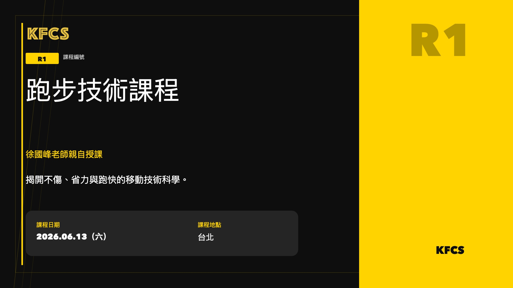
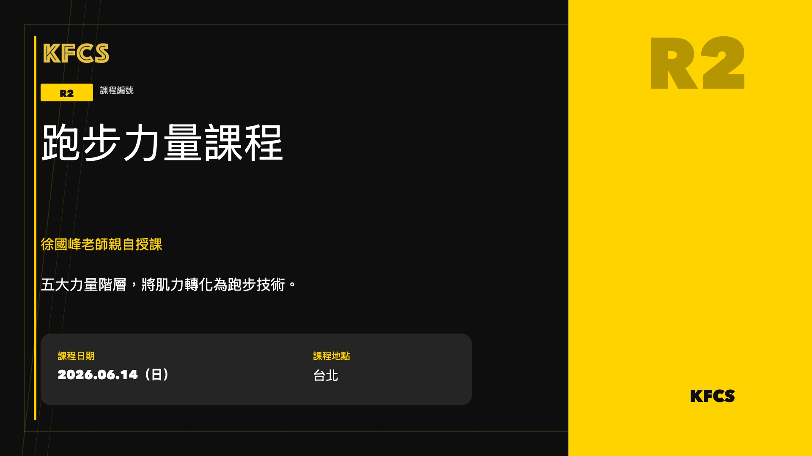
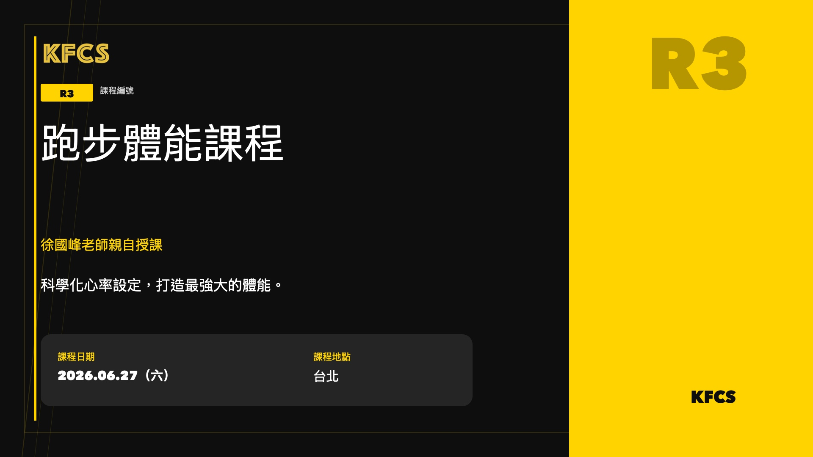
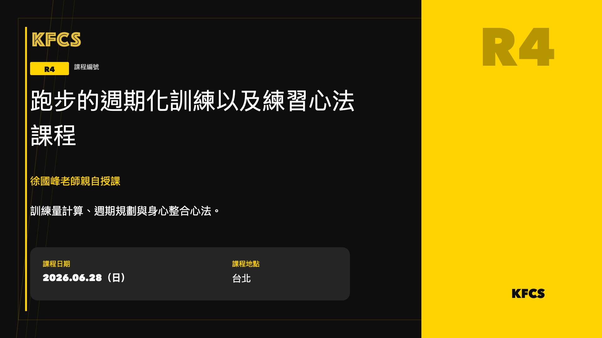
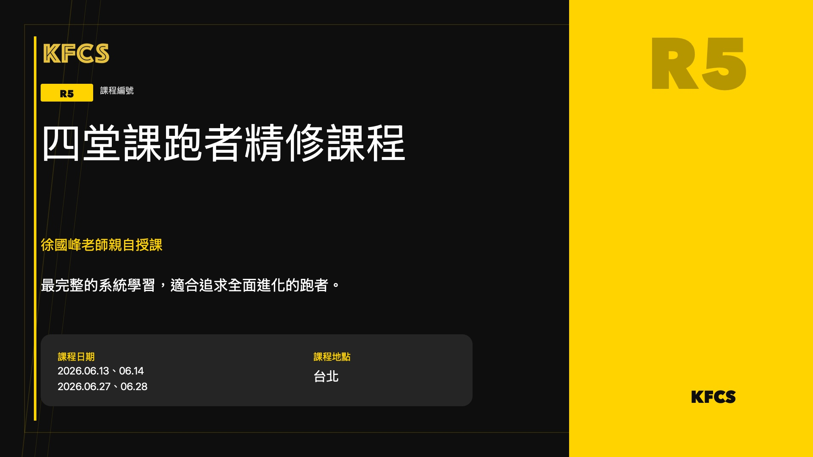
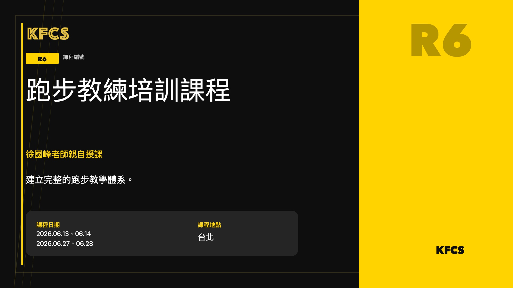

2026 跑步課程總覽＆跑者培訓、教練認證
全年課程架構、每日課程大綱、報名方案與費用一次看懂，找到最適合你的入口。
閱讀全文 →這裡整理了 2026 年 KFCS 跑步課程的完整簡章與報名資訊。 想了解每一門課在教什麼、適合誰、怎麼報名，都可以從這裡開始閱讀。

從力學原理出發，重建你的跑步本能。揭開不傷、省力與跑快的移動技術科學。
閱讀簡章 →
五大力量階層，把力量轉化為跑步技術，避免抽筋、拉傷與動作品質崩解。
閱讀簡章 →
訓練強度與跑量的科學化設定，用量化的方式打造扎實的體能。
閱讀簡章 →
跑力提升與週期化訓練原理，加上跑者以身練心：訓練量計算、週期規劃與身心整合。
閱讀簡章 →
一次掌握技術、力量、體能與練心的完整系統，適合追求全面進化的跑者。
閱讀簡章 →
含實習、報告與 KFCS 專屬編號教練證書的完整培訓路徑，學習擔任教練。
閱讀簡章 →報名截止日：2026 年 6 月 10 日，額滿會提早截止。